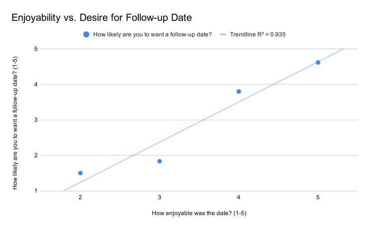
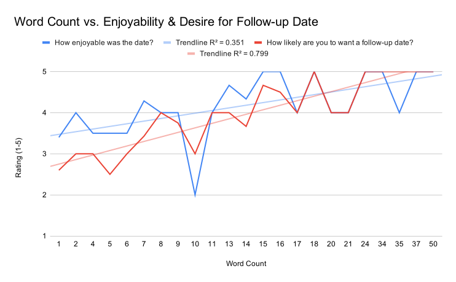

The Post-Date Text
Deciphering the Pragmatics of Modern Romance
This article was originally written for my freshman linguistics survey course and was eventually published in BYU's student linguistics journal, Schwa, in Winter 2020.
This study attempts to determine common elements of post-date texts, a new type of social script born from computer-mediated communication, and how these elements are used to convey interest or disinterest in a relationship. Data consisting of post-date texts and numerical ratings of each date were collected via student surveys. Certain markers, such as the use of emojis, were found to be universally positive or negative, while others, such as the use of all caps, were found to be gender-specific or simply neutral. The results indicated that these texts are signals of affection and interest in future dating.
Introduction
A new and increasingly important social script has developed in the dating scene among high school and university students through the means of computer-mediated communication (CMC). Shortly following a date, it is expected for one of the date participants to send a post-date text. This text typically expresses appreciation for the other person involved in the date and for the time spent by the date participants. Appreciation for being asked on the date can also be expressed. There are many personal theories floating around about who is obligated to text first, when it is acceptable to send such a text, and what it means if no text is sent at all. It is often a source of great anxiety for the date participants attempting to decipher the pragmatic meaning behind their dates’ words, especially if there is romantic interest.
Research has been conducted on how we express affection to one another, including on certain forms of CMC, such as Facebook. However, little research exists on the topic of the post-date text specifically. This article attempts to understand the scripts of post-date texts and their components as well as to develop a working theory as to their purpose. The article will also explore signs of affection in the text and differences between genders. It is anticipated that certain linguistic markers will be more common than others, that the strength of certain markers will differ by gender, and that the post-date text itself will prove to be a strong indicator of affection rather than just a pleasantry.
Literature Review
Previous research conducted by Kory Floyd and Mark T. Morman (1998) has established that affectionate communication plays an important role in the development and definition of interpersonal relationships. They found that affection is communicated in three main ways: (1) through verbal expressions (“I love you”), (2) through direct, non-verbal actions (hugging, kissing, etc.), and (3) through social support. From these findings, Floyd developed an Affectionate Communication Index to be able to quantify affection in communication in a way that can be compared across multiple studies. The Index was constructed by administering a battery of tests to university students. Students were quizzed on what they personally acknowledged saying and doing to express affection to their loved ones. Another group of students was given the list of responses and rated the ones they viewed as legitimate expressions of affection.
A closer examination of affection expressed on the social media platform Facebook was conducted by Daniel H. Mansson and Scott A. Myers (2011). Drawing on previous research by Floyd and Morman, Mansson and Myers employed a similar process of asking university students to identify how they express affection on Facebook and to rate others’ expressions for their validity. Some examples of expressing affection on Facebook include using emoticons, commenting, friending, complimenting, and wishing happy birthdays. Through their study, Mansson and Myers learned how close friends communicate affection online, how certain gender differences are communicated, and how appropriate the friends deemed the expressions. It was also found that women are more expressive than men are, and women perceive emoticons and similar expressions as more appropriate forms of affection than men do.
Methodology
Similar to the studies mentioned above, this study involves a survey of university students, namely first-year students at Brigham Young University who are dating and who live on campus. Respondents filled out a Google Form with the following questions regarding a recent date they went on:
- What is your gender? (Male/Female)
- Who planned the date? (Me/My date)
- How enjoyable was the date? (1 to 5)
- How likely are you to want a follow-up date? (1 to 5)
- What was the first text you sent after the date? (May be left blank if no text was sent.)
- Who texted first? (Me/My date/No text was sent.)
In an improvement upon the previous studies, this survey was designed to collect raw data about actual dates. This design eliminated bias caused by self-reporting and by knowing that one is being observed. Additionally, the real texts that correlated to the survey responses were studied. Since the texts were already sent, the data is an accurate representation of the respondents’ typical language. Post-date text responses were tabulated in Google Sheets, and particular features of the texts were marked. The marked features include date-specific details, the use of the date participant’s name, all-caps, emojis, and exclamation marks, and expressions of gratitude, terms of endearment, compliments, and concerns for the date participant’s safety.
Results and Analysis
There were fifty-one respondents in total (twenty-seven males and twenty-four females). The data appears to consist of mostly positive date experiences, although there were some negative experiences as well. For the purpose of this analysis, a positive result is one that correlates with a better-than-average rating about wanting a follow-up date (see Table 1). A negative result is one that correlates with a worse-than-average rating about wanting a follow-up date. The most common features of a post-date text in descending order are expressions of gratitude, the use of exclamation marks, emojis, and date-specific details, and expressions of concern for the date participant’s safety. The most positive features of a post-date text in descending order are the use of terms of endearment, all-caps, compliments, emojis, and date-specific details. Any post-date text sent is a slight positive indicator, while no text sent at all is a strong negative indicator (the average desire for a follow-up date is 2.5 when no post-date text is sent). Also, sending only pictures is a strong negative indicator, since the average desire for a follow-up date when this happens is also a 2.5.
| Metric | Average |
|---|---|
| How enjoyable was the date? (1 to 5) | 4.137254902 |
| How likely are you to want a follow-up date? (1 to 5) | 3.725490196 |
| Word count of text | 11.96078431 |
According to Figure 1, there is a strong positive correlation with the post-date text’s word count and the date participant wanting a follow-up date (R² = 0.8). This trend can likely be attributed to the inclusion of detail and other indicators in the post-date text. These inclusions provide the strongest correlation between any of the indicators. Among other findings, around a tenth of female date participants had planned the original date. According to Figure 2, the more enjoyable the date was, the more likely the date participants wanted a follow-up date. There is no real trend for knowing which gender is supposed to send the post-date text first, although there is a slight bias toward whoever planned the date.


Using Table 2, some of the most significant differences between genders can be postulated. For instance, a male expressing gratitude is a strong positive, while a female expressing gratitude is neutral (just a pleasantry) or possibly even slightly negative. Using all-caps is an especially female indicator and is a strong positive.
| Indicator | Average: Desire for Follow-up | Count |
|---|---|---|
| Male (Total: 27) | ||
| Endearment | 5 | 1 |
| Emoji | 4.54 | 13 |
| Compliment | 4.5 | 4 |
| Safety | 4.4 | 5 |
| Detail | 4.29 | 7 |
| Gratitude | 4.12 | 17 |
| ! | 4 | 15 |
| Name | 4 | 5 |
| Average | 3.70 | 27 |
| Photos | 2.4 | 5 |
| All-caps | N/A | 0 |
| Female (Total: 24) | ||
| Endearment | 5 | 1 |
| All-caps | 4.67 | 3 |
| Compliment | 4.67 | 3 |
| Detail | 4.6 | 5 |
| Emoji | 4.56 | 9 |
| Safety | 4.5 | 2 |
| Average | 3.75 | 24 |
| ! | 3.67 | 15 |
| Gratitude | 3.64 | 14 |
| Name | N/A | 0 |
| Photos | N/A | 0 |
Discussion and Conclusion
The data suggests that the post-date text is more than a pleasantry and is generally employed as an expression of affection to the date participant receiving the text—or at least the post-date text is a signal that the date participant sending it would be interested in going on a follow-up date. The post-date text is a means of using CMC to continue developing the relationship after the date is over. While there is no set script for who should text first, it is important that a text is sent for the relationship to be maintained. A date participant who is unaware of the pragmatic significance of the post-date text may unintentionally damage the relationship that was created on the date by not sending a text. It is also important for those in the beginning of a relationship to be in tune to the indicators that their love interest uses to express affection, whether those indicators are individual-specific or one of the gender-specific indicators that this article examined. The post-date text is indeed proving to be an important part of dating for young people.
References
- Floyd, K., & Morman, M. T. (1998). The measurement of affectionate communication. Communication Quarterly, 46(2), 144–162. https://doi.org/10.1080/01463379809370092
- Mansson, D. H., & Myers, S. A. (2011). An initial examination of college students’ expressions of affection through Facebook. Southern Communication Journal, 76(2), 155–168. https://doi.org/10.1080/10417940903317710